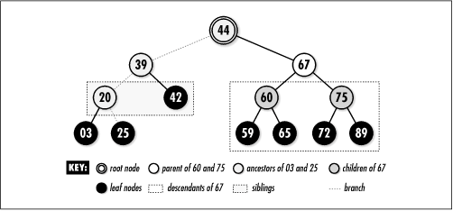
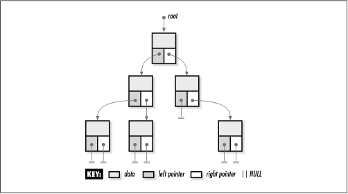
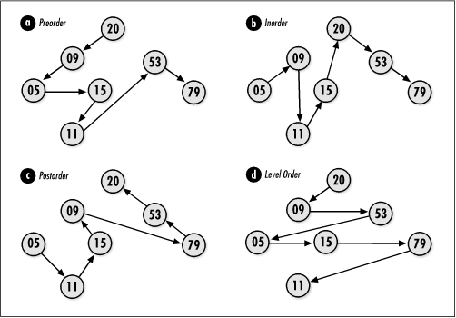

9.1 Description of Binary
Trees
A binary tree is a hierarchical
arrangement of nodes, each having up to two nodes
immediately below it. The nodes immediately below a node are
called its children. The node above each child is called
its parent. Nodes can also have siblings,
descendants, and ancestors.
As you might expect, the siblings of a node are the other
children of its parent. The descendants of a node are all of
the nodes branching out below it. The ancestors of a node are
all the nodes along the path between it and the root. The
performance associated with a tree often is discussed in terms
of its height, the number of
levels in which nodes reside. As we will see, tree terminology
is as much familial as it is arboreal (see Figure
9.1).
Each node in a
binary tree contains three parts: a data member and two
pointers called the left and
right pointers. Using this
three-member structure, we form a binary tree by setting the
left and right pointers of each node to point
to its children (see Figure
9.2). If a node does not have a child to its left or
right, we set the appropriate pointer to NULL, a convenient
sentinel that marks the end of a branch. A
branch is a series of nodes beginning at the root and ending
at a leaf node. Leaf nodes are the nodes along the
fringe of the tree that have no children. Sometimes when
working with several trees at once, the trees are said to form
a forest.


9.1.1 Traversal Methods
Traversing a binary tree means
visiting its nodes one at a time in a specific order. Compared
with some linked data structures, such as linked lists, how to
traverse the nodes of a binary tree may not be immediately
apparent. In fact, there are many ways in which we can
proceed. Typically, one of four types of traversals is used:
preorder, inorder, postorder, or level order. The example of
expression trees later in this chapter presents recursive
implementations of the preorder, inorder, and postorder
traversals. For now, let's look at how each traversal
works.
Traversing a tree is particularly simple if
we think of the tree recursively as being composed of many
smaller subtrees. Figure
9.3 illustrates each traversal. Although these traversals
are presented in the context of binary trees, each can be
generalized to other types of trees as well.
9.1.1.1 Preorder traversal
In a preorder
traversal for a given subtree, we first traverse its root,
then to the left, and then to the right. As we explore
subtrees to the left and right, we proceed in a similar manner
using the left or right node as the root of the new subtree.
The preorder traversal is a
depth-first exploration, like that presented for graphs in Chapter
11.
9.1.1.2 Inorder traversal
In an inorder
traversal for a given subtree, we first traverse to the left,
then to the root, and then to the right. As we explore
subtrees to the left and right, we proceed in a similar manner
using the left or right node as the root of the new
subtree.
9.1.1.3 Postorder traversal
In a postorder
traversal for a given subtree, we first traverse to the left,
then to the right, and then to the root. As we explore
subtrees to the left and right, we proceed in a similar manner
using the left or right node as the root of the new
subtree.
9.1.1.4 Level-order traversal
To traverse a binary
tree in a level-order fashion, visit its nodes beginning at
the root and proceed downward, visiting the nodes at each
level from left to right. The level-order traversal is a
breadth-first exploration, like that presented for graphs in
Chapter
11.

9.1.2 Tree Balancing
Balancing a tree is
the process of keeping it as short as possible for a given
number of nodes. This means making sure that one level of the
tree is completely full before allowing a node to exist at the
next level. Formally, a tree is balanced if all leaf nodes are
at the same level or, if not, all leaf nodes are in the last
two levels and the second-to-last level is full. For example,
the tree in Figure
9.1 is balanced because all leaf nodes are in the third
and fourth levels, and the third level is full. On the other
hand, the tree in Figure
9.3 is not balanced. A balanced
tree is left-balanced if all leaves occupy only the leftmost
positions in the last level. The tree in Figure
9.4 is a left-balanced tree. We will see one important
application of balanced trees when binary search trees are
discussed later in this chapter. In Chapter
10 we will see how a left-balanced binary tree helps to
implement a heap and priority queue.
 |